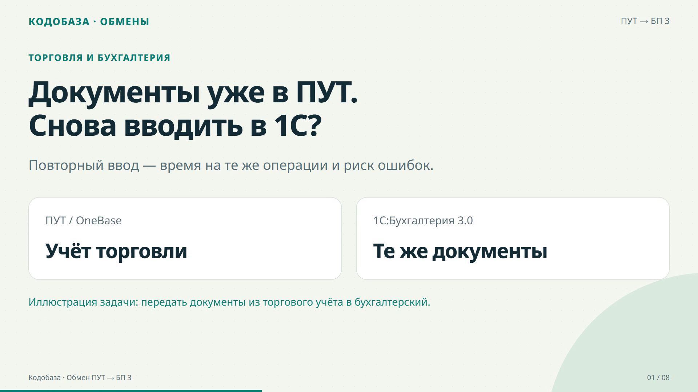
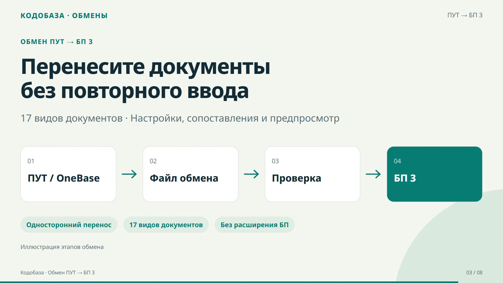
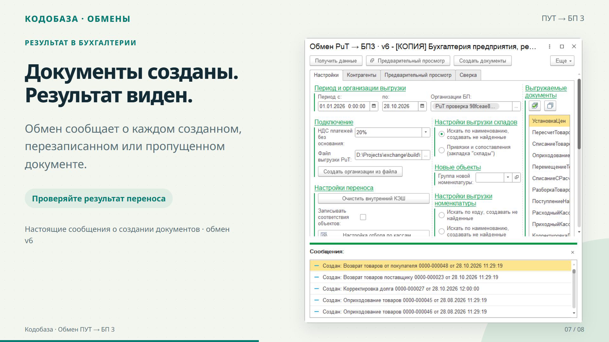

Один ролик, три задачи
Кадры из готового видео ПУТ → БП 3

01 · Проблема
Зачем передавать документы
между двумя системами

02 · Решение
Как данные проходят
от ПУТ до Бухгалтерии

03 · Результат
Что получилось
после загрузки документов